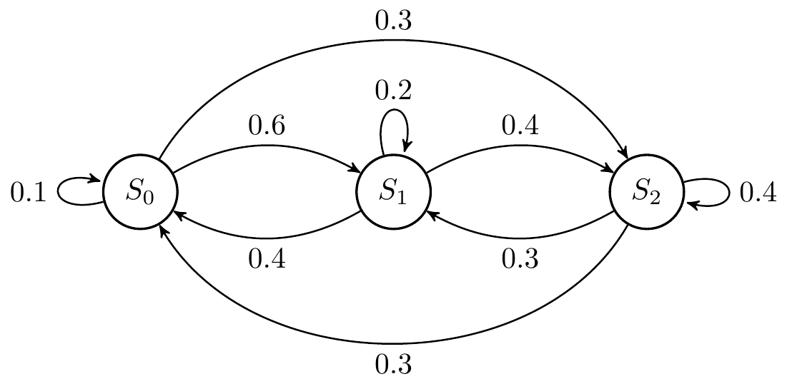
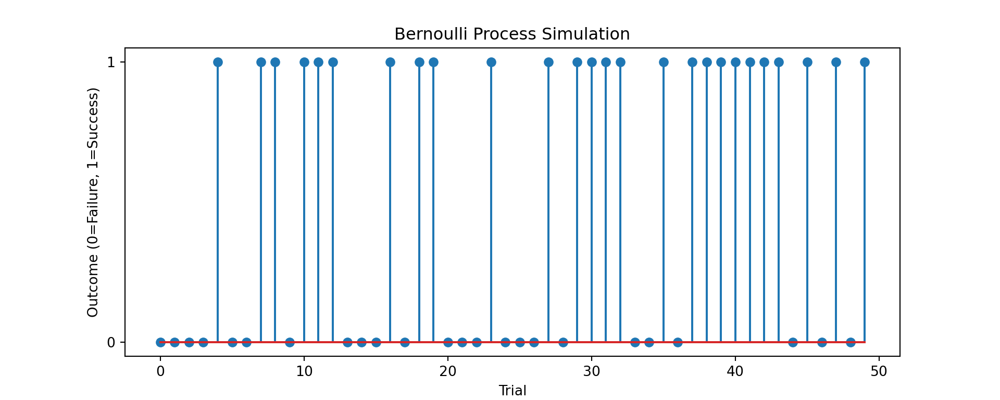
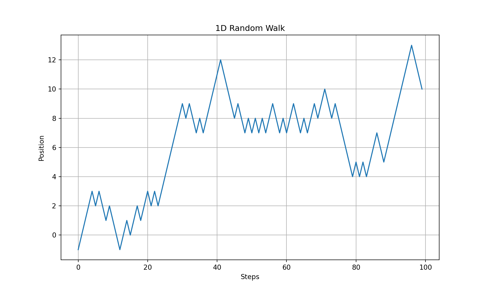
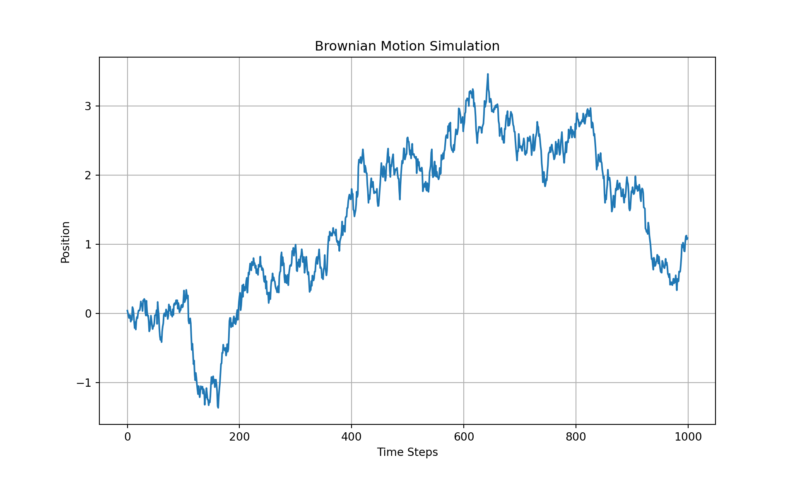
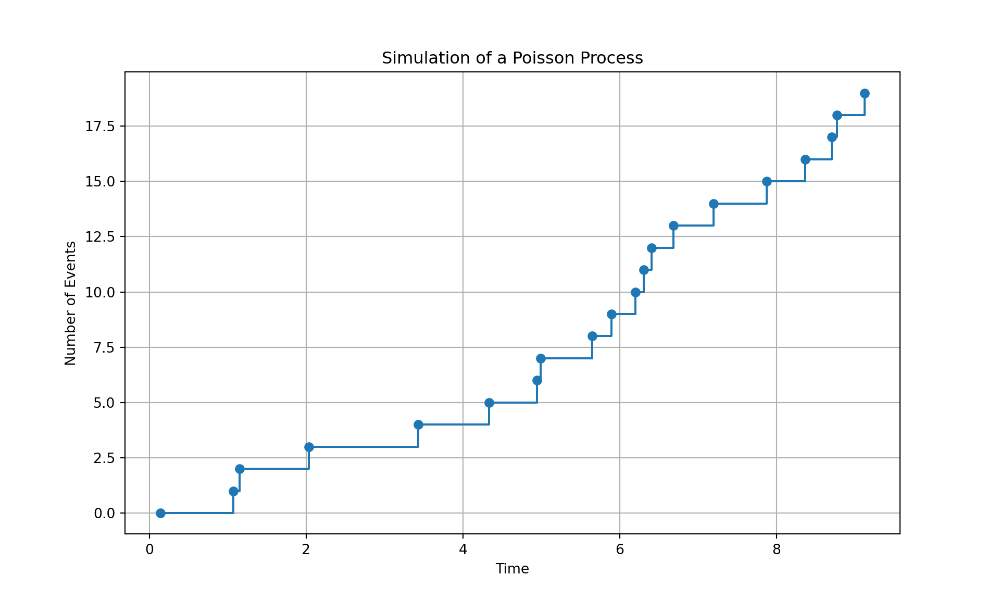
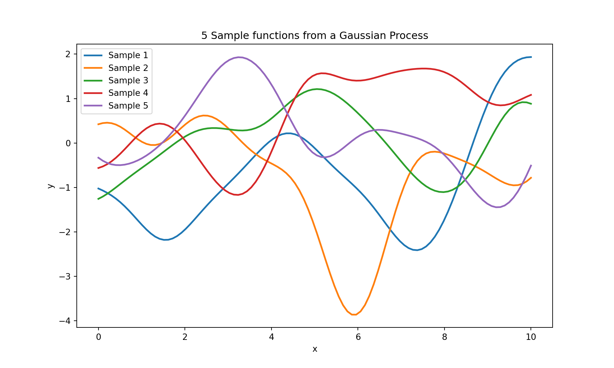

5 Random Processes and Sequences
A random process, also known as a stochastic process, is a mathematical concept that describes a collection of random variables ordered in time or space. It is used to model systems that evolve randomly over time or space.
Mathematicaly, a random process is a family of random variables, \(\{X(t) : t \in T\}\), where \(t\) represents a parameter often interpreted as time (but can also represent space or other dimensions), and \(T\) is the index set (usually a subset of real numbers). Each random variable \(X(t)\) in the family has its own probability distribution, and the joint distribution of any finite number of these random variables is specified.
The following are important characteristics of random processes:
- Time Dependence: The evolution of the process over time can be deterministic or stochastic.
- State Space: The set of possible values (or states) the random variables can take. It can be discrete (like a set of integers) or continuous (like real numbers).
There are several kinds of random processes. Some of the commonly used are summarized next.
5.1 Discrete-Time Processes
Discrete-time processes are a type of stochastic or random process where the set of indices (usually representing time) is discrete. This means that the process is observed or defined only at specific, separated points in time.
Key characteristics of discrete-time processes are
- Time Index: In discrete-time processes, the time index, often denoted as \(t\), takes values from a discrete set, like integers. It’s as if the process is observed at distinct time steps (e.g., daily stock prices).
- Random Variables: At each time index, the process is described by a random variable. These variables can be independent or have some form of dependency.
- Examples: Common examples of discrete-time processes include time series in economics, daily weather records, and signal processing data.
The following are three important types of discete-time processes:
5.1.1 Bernoulli Process
A Bernoulli Process is a fundamental type of discrete-time stochastic process. It is a sequence of independent and identically distributed (i.i.d.) random variables that take values from a binary set, typically {0, 1}, representing two outcomes, commonly termed “success” and “failure.”
Let’s denote the random variables in the sequence as \(X_1, X_2, ..., X_n\). Each \(X_i\) is a Bernoulli random variable, which means:
- \(X_i\) takes the value 1 with probability \(p\) (success).
- \(X_i\) takes the value 0 with probability \(1 - p\) (failure).
So, mathematically, the probability mass function (PMF) of each \(X_i\) is given by:
\[ P(X_i = x) = p^x (1 - p)^{1 - x},\]
for \(x \in \{0, 1\}\), where \(p\) is the probability of success.
Notably:
- Each trial (or each random variable in the sequence) is independent of the others.
- Each random variable follows the same Bernoulli distribution with the same probability of success \(p\).
- The process is defined at discrete time intervals (e.g., coin flips in a series of experiments).
Some examples where Bernoulli process is used to model sequences are:
- Coin Flipping: A sequence of coin flips where each flip is independent, and the probability of getting heads (success) is \(p\).
- Quality Control: In manufacturing, where each item produced either passes (success) or fails (failure) quality control with some probability.
- Binary Data Modeling: In scenarios where data can be modeled as a sequence of binary outcomes, like click/no-click, buy/not buy in user behavior analysis.
The number of successes in a sequence of Bernoulli trials can be modeled by a Binomial distribution. If you conduct \(n\) Bernoulli trials (each with success probability \(p\)), the total number of successes follows a Binomial distribution with parameters \(n\) and \(p\).
A Bernoulli Process is a simple yet powerful model for representing scenarios where events or outcomes are binary and independent, a common situation in many practical applications in statistics and machine learning.
Simulating a Bernoulli process in Python is straightforward and can be done using the numpy library, which offers efficient array operations and random number generation capabilities. Here’s an example of how to simulate a Bernoulli process:
import numpy as np
import matplotlib.pyplot as plt
def bernoulli_process(p, n):
"""
Simulate a Bernoulli process.
Parameters:
p (float): Probability of success for each trial.
n (int): Number of trials.
Returns:
numpy.ndarray: An array representing the Bernoulli process (successes and failures).
"""
# Each trial results in 1 (success) with probability p and 0 (failure) with probability 1-p
return np.random.binomial(1, p, n)
# Parameters for the Bernoulli process
probability_of_success = 0.5 # Example probability (like flipping a fair coin)
number_of_trials = 50 # Total number of trials
# Simulate the Bernoulli process
process = bernoulli_process(probability_of_success, number_of_trials)
# Plotting the results
plt.figure(figsize=(10, 4))
plt.stem(process)
plt.title('Bernoulli Process Simulation')
plt.xlabel('Trial')
plt.ylabel('Outcome (0=Failure, 1=Success)')
plt.yticks([0, 1]);
plt.show()
In this script, the bernoulli_process function simulates the Bernoulli process. It uses numpy.random.binomial with 1 trial for each step, which effectively makes it a Bernoulli trial. We define the probability of success (e.g., 0.5 for a fair coin toss) and the number of trials. The function returns an array of 0s and 1s, representing failures and successes, respectively. The resulting Bernoulli process is visualized using a stem plot, where each stem represents the outcome of a single trial. This code demonstrates a basic simulation of a Bernoulli process and is useful for understanding the behavior of binary outcomes over a series of independent trials.
5.1.2 Random Walk
A random walk is a mathematical model that describes a path consisting of a succession of random steps. This model is widely used in various fields such as physics, finance, biology, and computer science.
In its simplest form, a one-dimensional random walk can be defined as follows:
Initial Position: Start at a fixed point, usually \(x = 0\).
Random Steps: At each time step \(t\), take a step either to the left or to the right. The direction of each step is determined randomly.
Discrete Steps: If the step is to the right, the position increases by 1 (i.e., \(x_{t+1} = x_t + 1\)). If the step is to the left, the position decreases by 1 (i.e., \(x_{t+1} = x_t - 1\)).
Mathematically, if \(S_n\) denotes the position after \(n\) steps, and each step \(X_i\) is a random variable that takes the value +1 or -1 with equal probability, then:
\[S_n = \sum_{i=1}^n X_i.\]
Notably:
- The steps \(X_i\) are independent of each other.
- Each step has an equal probability of being +1 or -1.
- The process takes place in discrete time steps and discrete spatial steps.
- The expected position after \(n\) steps is 0, as the walk is symmetric.
- The variance after \(n\) steps is \(n\), reflecting the increasing uncertainty about the position over time.
- The concept extends to higher dimensions, where at each step, the move is made in one of the possible directions in the plane or space.
Random walks are used to model many phenomenon. For example:
- Physics: Modeling diffusion processes, such as the movement of molecules.
- Finance: Stock price movements are often modeled as random walks.
- Biology: Pathways of motile organisms or molecules within cells.
- Computer Science: Algorithms for searching or optimization.
A random walk is a fundamental stochastic process and provides a simple yet powerful model for various phenomena. It is a cornerstone model in the study of stochastic processes and has a profound impact on our understanding of random behavior in natural and artificial systems.
Here’s a Python example that simulates a one-dimensional random walk:
import numpy as np
import matplotlib.pyplot as plt
def random_walk(steps):
# Steps can be -1 or 1
walk_steps = np.random.choice([-1, 1], size=steps)
# Cumulative sum to simulate the walk
walk = np.cumsum(walk_steps)
return walk
# Number of steps
n_steps = 100
# Simulate a random walk
walk = random_walk(n_steps)
# Plot the random walk
plt.figure(figsize=(10, 6))
plt.plot(walk)
plt.title('1D Random Walk')
plt.xlabel('Steps')
plt.ylabel('Position')
plt.grid(True)
plt.show()
5.1.3 Markov Chain
A Markov Chain is a stochastic process that undergoes transitions from one state to another within a finite or countably infinite number of possible states. It is characterized by the property that the future state depends only on the current state, not on the sequence of events that preceded it. This property is known as the Markov property or memorylessness.
Mathematically, a Markov Chain is defined by:
- States: A set of states \(S = \{s_1, s_2, ..., s_n\}\).
- Transition Probability: The probability of moving from one state to another. For a state \(s_i\) and \(s_j\), the transition probability is denoted as \(P_{ij}\), which is the probability of transitioning from state \(s_i\) to state \(s_j\).
- Transition Matrix: A matrix \(P\) where each element \(P_{ij}\) represents the transition probability from state \(s_i\) to state \(s_j\). For a Markov chain, the sum of the probabilities in each row of the matrix is 1, i.e., \(\sum_{j} P_{ij} = 1\) for all \(i\).
They have the following properties:
- Discrete Time Steps: The process moves from one state to another at discrete time steps.
- Memorylessness: The next state depends only on the current state, not on the past states.
There are three kinds of Markov Chains:
- Irreducible: A Markov chain is irreducible if it is possible to get to any state from any state.
- Periodic/Aperiodic: A state has a period if the chain can return to the state only at multiples of some integer. A Markov chain is aperiodic if it has no periodic states.
- Transient and Recurrent States: A state is transient if the chain can leave it and never return; otherwise, it is recurrent.
Markov Chains are used in various fields, including economics, genetics, game theory, and computer science.
As an example, consider the following the Markov chain.
The transition matrix is given by \[ \boldsymbol{M} = \begin{bmatrix} 0.1 & 0.6& 0.3\\ 0.4 & 0.2& 0.4\\ 0.3& 0.3& 0.4 \end{bmatrix}. \] If \(\boldsymbol{p}(k) = \begin{bmatrix} p_0(k) & p_1(k) & p_2(k) \end{bmatrix}\) is the probability (row) vector at time \(k\), defined by the propabilities \(p_0(k), p_1(k),\) and \(p_2(k)\) that the system is in state \(S_0\), \(S_1\), and \(S_2\) respectively, the probabilities in the next time step is given by \[ \boldsymbol{p}(k+1) = \boldsymbol{p}(k)\boldsymbol{M}. \] We start with \(\boldsymbol{p}(0)\) and iterate \(\boldsymbol{p}(k)\) with the above update equation.
Here’s a Python script to simulate the Markov Chain shown above:
import numpy as np
M = np.array([[0.1, 0.6, 0.3],
[0.4, 0.2, 0.4],
[0.3, 0.3, 0.4]])
p = np.array([1.,0.,0.])
np.set_printoptions(formatter={'float': '{: 0.3f}'.format})
for iter in range(11):
print(f"k={iter}, p={p}")
p = p@Mk=0, p=[ 1.000 0.000 0.000]
k=1, p=[ 0.100 0.600 0.300]
k=2, p=[ 0.340 0.270 0.390]
k=3, p=[ 0.259 0.375 0.366]
k=4, p=[ 0.286 0.340 0.374]
k=5, p=[ 0.277 0.352 0.371]
k=6, p=[ 0.280 0.348 0.372]
k=7, p=[ 0.279 0.349 0.372]
k=8, p=[ 0.279 0.349 0.372]
k=9, p=[ 0.279 0.349 0.372]
k=10, p=[ 0.279 0.349 0.372]In the code we started from the state \(S_0\), therefore \(\boldsymbol{p}(0) = \begin{bmatrix} 1 & 0 & 0 \end{bmatrix}\). The probabilities associated with each state in the first 10 steps are shown.
Thus in Markov Chain simulation, we propagate the probabilities associated with states since the system can be in any state with the given probability. In this case, we see that the system reaches a steady-state probability of \(\boldsymbol{p}(\infty)=\begin{bmatrix} 0.279 & 0.349 & 0.372 \end{bmatrix}\).
The steady-state probabilities can be computed from the eigen-values of the transition matrix. This is shown in the next Python code.
import numpy as np
# Define the transition matrix
transition_matrix = np.array([[0.1, 0.6, 0.3],
[0.4, 0.2, 0.4],
[0.3, 0.3, 0.4]])
# Compute left eigenvectors and eigenvalues
eigenvalues, left_eigenvectors = np.linalg.eig(transition_matrix.T)
# Find the left eigenvector corresponding to the eigenvalue 1 (steady state)
steady_state_index = np.argmin(np.abs(eigenvalues - 1))
steady_state_vector = left_eigenvectors[:, steady_state_index].real
# Normalize the steady state vector
steady_state_vector /= steady_state_vector.sum()
print(f"The steady-state probabilities are: {steady_state_vector}")The steady-state probabilities are: [ 0.279 0.349 0.372]The steady state vector for the given Markov Chain, calculated using the left eigenvectors and eigenvalues of the transition matrix, is approximately: \(\begin{bmatrix} 0.279 & 0.349& 0.372\end{bmatrix}\), which matches the simulated output. Therefore, we don’t need to simulate a Markov chain to determine the steady-state probabilities.
The steady-state probability vector indicates that, in the long run, the system will spend approximately 27.9% of the time in state \(S_0\), 34.9% in state \(S_1\), and 37.2% in state \(S_2\). This steady state is reached regardless of the initial state of the system, given the chain is ergodic (see below for a discussion on ergodic processes).
5.2 Continuous-Time Processes
A continuous time random process is a collection of random variables ordered in time, where time is considered as a continuous variable. This type of process is used to model systems or phenomena that evolve or change state in a continuous manner over time.
Key characteristics of a continuous time random process are:
The process is defined for every instant in a continuous time interval. For instance, \(X(t)\) for \(t\) in the interval \([0, \infty)\) or \([a, b]\).
Each \(X(t)\) is a random variable representing the state of the process at time \(t\).
The state space, which is the set of possible values of \(X(t)\), can be discrete or continuous.
For each \(t\), \(X(t)\) has a probability distribution, and the joint distribution of \(X(t_1), ..., X(t_n)\) for any \(t_1, ..., t_n\) is defined.
The mean function \(m(t) = \mathbb{E}\left[X(t)\right]\) and covariance function \[R(s, t) = \mathbb{E}\left[(X(s) - m(s))(X(t) - m(t))\right],\] describe the first and second moments of the process.
Many continuous time processes are analyzed and solved using differential equations.
Continuous time random processes are essential in modeling and analyzing systems that exhibit random behavior in a continuous temporal framework. They provide a foundation for understanding and predicting the behavior of a wide range of real-world phenomena. Some examples include:
- Time Series Analysis: Modeling and predicting stock prices, weather patterns, and other phenomena that change continuously over time.
- Signal Processing: Analyzing and filtering continuous signals in communications and audio processing.
- Regression Models: Gaussian processes are used for non-parametric regression, providing uncertainty measurements along with predictions.
We next describe some important types of continuous time random processes.
5.2.1 Brownian Motion (Wiener Process)
Brownian Motion, also known as the Wiener Process, is a fundamental continuous-time stochastic process in mathematics, physics, and finance. It models random motion, often used to represent the unpredictable movement of particles in fluid or the erratic fluctuations in financial markets.
Key characteristics are:
- Continuous Path: Unlike discrete processes, Brownian motion has a continuous path with continuous time parameter.
- Normal Increments: The increments of the process are normally distributed. For any two times \(t\) and \(s\), the increment \(W(t) - W(s)\) is normally distributed with mean 0 and variance \(|t-s|\).
- Independent Increments: Increments over non-overlapping intervals are independent.
- Starts at Zero: The process typically starts at 0, i.e., \(W(0) = 0\).
Some applications include:
- Physics: Modeling the random motion of particles suspended in a fluid (a phenomenon observed by botanist Robert Brown).
- Finance: Used in the Black-Scholes model for option pricing and to model stock prices in the Efficient Market Hypothesis.
- Mathematics: Fundamental in the study of stochastic processes and calculus.
Here’s a simple Python script to simulate Brownian Motion using normal increments:
import numpy as np
import matplotlib.pyplot as plt
def simulate_brownian_motion(steps, delta_t):
"""
Simulate Brownian Motion (Wiener Process).
Parameters:
steps (int): Number of steps in the simulation.
delta_t (float): Time interval between steps.
Returns:
numpy.ndarray: Simulated path of Brownian Motion.
"""
# Normal increments with mean 0 and variance delta_t
increments = np.random.normal(0, np.sqrt(delta_t), steps)
# Cumulative sum to simulate the path
return np.cumsum(increments)
# Parameters for the simulation
number_of_steps = 1000
time_interval = 0.01
# Simulate Brownian Motion
path = simulate_brownian_motion(number_of_steps, time_interval)
# Plotting the results
plt.figure(figsize=(10, 6))
plt.plot(path)
plt.title('Brownian Motion Simulation')
plt.xlabel('Time Steps')
plt.ylabel('Position')
plt.grid(True)
plt.show()
In this script, Brownian motion is simulated as a cumulative sum of normal increments. Each increment is normally distributed with mean 0 and variance proportional to the time interval delta_t. The simulate_brownian_motion function generates the path of Brownian motion over a specified number of steps and time interval. The resulting path is plotted to visualize the typical “random walk” pattern of Brownian motion.
5.2.2 Poisson Process
A Poisson Process is a fundamental stochastic process used extensively in various fields, including mathematics, physics, finance, and queueing theory. It models the occurrence of random events over time and is particularly useful for situations where events happen independently of each other.
Key characteristics are:
- The process models random events (like phone calls to a call center, decay of radioactive particles, or arrival of customers at a store) happening over time.
- Events occur independently of each other. The occurrence of one event does not affect the probability of another event occurring.
- The probability of an event occurring in a fixed interval of time is the same for all corresponding intervals of the same length.
- If the rate (average number of events per time unit) is constant the the Poisson process is ordinary or homogeneous. Else, the process is non-homogeneous.
- In a time interval of length \(t\), the number of events \(N(t)\) follows a Poisson distribution with parameter \(\lambda t\), where \(\lambda\) is the rate of the process.
- The probability of observing \(k\) events in time \(t\) is given by: \[ P(N(t) = k) = \frac{e^{-\lambda t} (\lambda t)^k}{k!}.\]
- The time between consecutive events follows an exponential distribution with rate \(\lambda\).
- Poisson processes have the memoryless property, meaning that the probability of an event occurring in the future is independent of how much time has already elapsed.
- It is often used to model rare events, where the actual number of occurrences in a fixed time interval is low relative to the potential number of occurrences.
Some common applications of Poisson process include:
- Queueing Systems: Modeling arrival of customers, calls, or requests in a system.
- Telecommunications: Describing the arrival of packets or messages in a network.
- Finance: Modeling the occurrence of certain types of financial transactions or market events.
- Biology and Medicine: Modeling random events like mutation occurrences or spread of diseases.
- Physics: Used in the study of decay processes of unstable particles.
In summary, the Poisson Process is a powerful tool for modeling and understanding phenomena where events occur randomly and independently over time. It serves as a foundation for more complex stochastic models and is integral to the field of stochastic processes.
Here is a Python code to simulate a Poisson process.
import numpy as np
import matplotlib.pyplot as plt
def simulate_poisson_process(rate, duration):
"""
Simulate a Poisson process.
Parameters:
rate (float): The average rate (lambda) of events per unit time.
duration (float): The total time duration for the simulation.
Returns:
list: Times at which events occur.
"""
# The time between events follows an exponential distribution
inter_event_times = np.random.exponential(1/rate, int(rate * duration))
# The actual event times are the cumulative sum of the inter-event times
event_times = np.cumsum(inter_event_times)
# Filter out times beyond the duration
event_times = event_times[event_times <= duration]
return event_times
# Parameters
rate = 2 # Average rate of 2 events per unit time
duration = 10 # Total duration of 10 time units
# Simulate the Poisson process
event_times = simulate_poisson_process(rate, duration)
# Plotting
plt.figure(figsize=(10, 6))
plt.plot(event_times, np.arange(len(event_times)), drawstyle='steps-post', marker='o')
plt.title('Simulation of a Poisson Process')
plt.xlabel('Time')
plt.ylabel('Number of Events')
plt.grid(True)
plt.show()
The Python script simulates a Poisson process. In this simulation:
- The Poisson process is characterized by an average rate (lambda) of 2 events per unit time.
- The process is simulated over a duration of 10 time units.
- The times at which events occur are generated based on the exponential distribution of inter-event times, which is a characteristic feature of the Poisson process.
5.2.3 Gaussian Process
A Gaussian Process (GP) is a powerful, flexible probabilistic model used in machine learning, particularly for tasks like regression, classification, and optimization. It is essentially a collection of random variables, any finite number of which have a joint Gaussian distribution.
Key concepts involved are:
- Unlike a Gaussian distribution defined over a discrete set of points, a GP is defined over a continuous domain, like time or space.
- A GP can be thought of as a distribution over functions. It provides a way to specify prior beliefs about the function being modeled (e.g., smoothness, periodicity).
- A GP is fully specified by its mean function \(m(x)\) and covariance function \(k(x, x')\), also known as the kernel. The mean function represents the average value of the function at point \(x\), and the covariance function defines the similarity between the function values at different points \(x\) and \(x'\).
Mathematically, a GP is defined as:
\[ f(x) \sim \mathcal{GP}(m(x), k(x, x')),\]
where:
- \(f(x)\) is a random function.
- \(m(x)\) is the mean function, often assumed to be zero (or another constant) for simplicity.
- \(k(x, x')\) is the covariance function or kernel, which encapsulates our assumptions about the function (like smoothness, periodicity, etc.).
GP is widely used in machine learning, such as
Regression (Gaussian Process Regression): Used for non-linear regression tasks. GPs are particularly useful because they provide not only predictions but also a measure of uncertainty in these predictions.
Classification: GPs can be extended to classification tasks.
Hyperparameter Tuning and Optimization: In Bayesian optimization, GPs are used to model the function to be optimized, particularly useful for optimizing expensive-to-evaluate functions.
Spatial Data Modeling: Useful in geostatistics and environmental modeling for interpolating and predicting spatial data.
Time Series Analysis: Applied in modeling and forecasting in time series data.
Some of the key advantages of using GP in machine learning include:
- Flexibility: The choice of kernel allows for a wide range of behaviors.
- Uncertainty Quantification: Provides a probabilistic measure of uncertainty in predictions.
- Non-Parametric: GPs are non-parametric, meaning they can model complex datasets without having to assume a specific functional form.
However, there are some shortcomings, such as:
- Computational Complexity: Involves operations on covariance matrices which can be computationally expensive, particularly for large datasets.
- Choice of Kernel: Selecting and tuning the right kernel is crucial and can be non-trivial.
In general, Gaussian Processes offer a principled approach to learning in uncertain environments, providing both predictions and assessments of uncertainty. They are a cornerstone in probabilistic modeling and Bayesian approaches in machine learning.
Here is a Python code that generates several sample paths from a given specification of a Gaussian process:
import numpy as np
import matplotlib.pyplot as plt
from sklearn.gaussian_process import GaussianProcessRegressor
from sklearn.gaussian_process.kernels import RBF
def plot_gaussian_process_samples(kernel, n_samples=5, n_points=100):
"""
Plot samples from a Gaussian Process with a specified kernel.
Parameters:
kernel: Kernel function for the Gaussian Process.
n_samples (int): Number of sample paths to generate.
n_points (int): Number of points in each sample path.
"""
# Create a Gaussian Process model with the specified kernel
gp = GaussianProcessRegressor(kernel=kernel)
# Generate points at which to sample
x = np.linspace(0, 10, n_points).reshape(-1, 1)
# Generate sample paths
y_samples = gp.sample_y(x, n_samples)
# Plotting
plt.figure(figsize=(10, 6))
for i in range(n_samples):
plt.plot(x, y_samples[:, i], lw=2, label=f'Sample {i+1}')
plt.title(f'{n_samples} Sample functions from a Gaussian Process')
plt.xlabel('x')
plt.ylabel('y')
plt.legend()
plt.show()
# Define the kernel (RBF in this case)
kernel = RBF(length_scale=1.0)
# Plot sample paths from the Gaussian Process
plot_gaussian_process_samples(kernel, n_samples=5)
The Python script uses the sklearn.gaussian_process module to simulate and plot sample paths from a Gaussian Process with a Radial Basis Function (RBF) kernel.
5.2.4 Continuous Time Random Walks
A Continuous Time Random Walk (CTRW) is a stochastic model that extends the concept of a traditional random walk to a continuous time setting. Unlike discrete random walks where steps occur at regular intervals, CTRW allows for irregular timing of steps, making it a versatile tool for modeling a wide range of real-world phenomena. In a CTRW, the steps themselves and the waiting times between these steps are treated as random variables. The step sizes can follow any chosen distribution, allowing the model to adapt to the specific characteristics of the system being studied, such as the erratic movement of stock prices or the random motion of particles in fluid dynamics.
The waiting time distribution between steps, often modeled by exponential or heavy-tailed distributions, introduces a degree of randomness in the timing of events, which is crucial for systems where events occur sporadically. This randomness in both step sizes and timing distinguishes CTRW from models like Brownian motion, which assumes infinitesimally small, Gaussian-distributed steps at continuous intervals.
CTRWs are widely used in various fields including physics, for modeling diffusion in complex media; finance, for stock price movement; ecology, for animal movement tracking; and network theory, for traffic and communication patterns. Their flexibility and adaptability in modeling both the magnitude and timing of changes make them particularly valuable in studying complex systems where traditional models may fall short. The analysis of CTRWs often involves Monte Carlo simulations and statistical methods to understand and predict the behavior of the underlying process.
5.3 Some Important Definitions
5.3.1 Ergodic Process
An ergodic process is a type of stochastic process that, over a long period, exhibits the same behavior averaged over time as it does averaged over the space of all its possible states. In other words, time averages and ensemble averages are equivalent for ergodic processes. This concept is vital in statistics, thermodynamics, and information theory, as it ensures that long-term observations are representative of the whole process.
Ergodic Process in Discrete Time In discrete-time stochastic processes (like Markov chains), an ergodic process must satisfy two conditions:
Irreducibility: From any state, there is a non-zero probability of reaching any other state. This ensures that the process doesn’t get stuck in a subset of states but can explore the entire state space over time.
Aperiodicity: The process should not be locked into a cyclic pattern. In other words, the system should not return to the same state only at multiples of some fixed number of steps.
When a discrete-time stochastic process, such as a Markov chain, is ergodic, it means that it will eventually reach a steady state distribution that does not depend on the initial state. This steady state distribution is used for ensemble averages, and over a long time, the time averages of the process will converge to the same values.
Ergodic Process in Continuous Time
In continuous-time stochastic processes (like Brownian motion or certain differential equations), ergodicity implies that the statistical properties (like mean and variance) can be deduced from a single, sufficiently long, random sample path of the process.
In continuous time, an ergodic process must satisfy two conditions:
- The process must be stationary: its statistical properties should not change over time.
- Similar to the discrete case, the process should not be restricted to a subset of its state space; it should be able to explore its entire state space given enough time.
Ergodicity plays a significant role in machine learning, particularly in ensuring the reliability and robustness of various algorithms and models. Some examples are:
Markov Chain Monte Carlo (MCMC) Methods: In MCMC, ergodicity is crucial to ensure that the Markov chain explores the entire state space adequately, thereby guaranteeing that samples generated from the chain are representative of the target distribution. This is essential in Bayesian inference, where MCMC methods are used to approximate posterior distributions when analytical solutions are infeasible.
Time Series Analysis: In time series analysis, the assumption of ergodicity allows for the use of time averages as substitutes for ensemble averages. This is particularly important when dealing with real-world data where obtaining multiple sample paths is impractical. Ergodic time series models ensure that inferences drawn from a single observed sequence over time are representative of the process’s overall behavior.
Reinforcement Learning (RL): In RL, many algorithms rely on the ergodicity of Markov Decision Processes (MDPs) to ensure that the state-action space is sufficiently explored. This exploration guarantees that the learned policy will perform well across the entire state space, not just in frequently visited regions.
Stationary Processes in Machine Learning Models: Ergodicity is often assumed in stationary processes, where statistical properties like mean and variance are constant over time. This assumption simplifies the modeling and prediction tasks in various machine learning applications, from natural language processing to financial modeling.
Robustness of Algorithms: Ergodicity can contribute to the robustness of machine learning algorithms by ensuring that the conclusions drawn from the training process (such as parameter estimates or feature importance) are representative of the entire data distribution and not biased by specific characteristics of the training set.
Statistical Learning Theory: In the broader context of statistical learning, ergodicity helps in understanding and proving convergence properties of learning algorithms, ensuring that they perform well not just on the training data but also on unseen data.
In summary, ergodicity is leveraged in machine learning to ensure that models and algorithms are representative, robust, and reliable, particularly in scenarios involving stochastic processes, Bayesian inference, time series analysis, and reinforcement learning. It forms a foundational aspect of ensuring that long-term behavior or averaged behavior of models aligns with the true underlying patterns of the data.
5.3.2 Markov Processes
A Markov Process, fundamentally characterized by the Markov property, asserts that the conditional probability distribution of future states of the process depends only upon the present state, not on the sequence of events that preceded it. In discrete time, this process is exemplified by a Markov Chain, where transitions between a finite or countably infinite set of states are governed by a transition matrix \(P\). Each element \(P_{ij}\) in this matrix represents the probability of moving from state \(i\) to state \(j\) in one time step, thus encapsulating the process’s dynamics. The transition matrix is a (right) stochastic matrix, i.e., the rows sums are equal to one. The Markov Chain’s analysis often involves studying its stationary distribution, if it exists, where the state probabilities stabilize over time.
In contrast, continuous-time Markov Processes, which are more complex, often manifest as Markovian jump processes or are defined by Stochastic Differential Equations (SDEs). The state transitions occur at random intervals, dictated by exponential distributions, and are characterized by a rate matrix or generator matrix, \(Q\), where each element \(Q_{ij}\) (for \(i \neq j\)) indicates the rate of transitioning from state \(i\) to state \(j\). The diagonal elements \(Q_{ii}\) are defined such that each row sums to zero, ensuring the conservation of probability. These processes are key in modeling systems where changes are continuous and event timings are stochastic, such as in financial modeling for interest rates or particle dynamics in physics.
Both discrete and continuous-time Markov Processes share the principle of memorylessness — the future evolution is independent of the past, given the present. This property simplifies the analysis and modeling of complex stochastic systems, making Markov Processes a fundamental tool in fields ranging from statistical mechanics to quantitative finance. The study of these processes involves a range of mathematical techniques, from linear algebra and probability theory in discrete time to differential equations and stochastic calculus in continuous time.
In machine learning, Markov Processes, encompassing both discrete-time Markov chains and continuous-time processes, are instrumental in various algorithms and models, particularly those involving sequential data or decision-making under uncertainty. Some examples are:
Hidden Markov Models (HMMs): These are widely used in sequence modeling tasks such as speech recognition, natural language processing, and bioinformatics. In HMMs, the observed data are considered to be a probabilistic function of underlying hidden states that follow a Markov process. The model aims to learn the hidden state sequence that most likely explains the observed data.
Reinforcement Learning (RL): Markov Decision Processes (MDPs), an extension of Markov processes, are foundational in RL. They provide a mathematical framework for modeling decision-making in situations where outcomes are partly random and partly under the control of a decision-maker. RL algorithms learn optimal policies to maximize cumulative rewards in MDPs, applicable in robotics, game playing, and autonomous systems.
Time Series Analysis: Markov models are used for forecasting in financial modeling, weather prediction, and other areas where future states of a series depend on current states. They provide a way to model temporal dynamics and make predictions.
Graphical Models: In probabilistic graphical models like Bayesian Networks, the Markov property is used to simplify the joint probability distribution over a set of random variables. This approach is useful in various tasks like causal inference, diagnosis, and prediction in complex systems.
Natural Language Processing (NLP): Beyond HMMs, other Markov process-based models are used for tasks like text generation, where the next word in a sequence depends on the previous ones.
Clustering and Segmentation: Markov models can be used to identify clusters or segments in sequential data, such as segmenting customer transaction sequences into meaningful phases.
Queueing Theory in Systems Optimization: In areas like network traffic management or supply chain optimization, Markov processes model the behavior of queues, aiding in the design of more efficient systems.
In machine learning, the application of Markov Processes is rooted in their ability to model stochastic behavior in sequential data and decision-making environments. Their versatility makes them a key component in the toolkit for addressing a wide range of problems where understanding and predicting temporal dynamics are crucial.
5.3.3 Stationary & Non Stationary Processes
A stationary process is a type of stochastic process whose statistical properties, such as mean, variance, and autocorrelation, do not change over time. This concept is crucial in time series analysis and signal processing, as it implies that the process behaves consistently over time, making it easier to analyze and predict.
Types of Stationarity 1. Strict (Strong) Stationarity: A process is strictly stationary if the joint probability distribution of any set of variables \(X_{t_1}, X_{t_2}, ..., X_{t_n}\) is the same as the distribution of $X_{t_1+h}, X_{t_2+h}, …, X_{t_n+h} $ for all \(t_1, t_2, ..., t_n\) and for any time shift \(h\). This means that not just the mean and variance, but all moments and joint distributions, are invariant over time.
- Weak (Covariance) Stationarity: A process is weakly stationary if the mean is constant over time, the variance is finite and time-invariant, and the covariance between two time points depends only on the time lag between them and not on the actual time points themselves.
Examples of stationary processes are:
White Noise: A classic example of a stationary process is white noise. In white noise, each random variable has the same distribution, usually a normal distribution with constant mean and variance, and each variable is independent of the others. This process is often used as a baseline or simple error model in time series analysis.
Rolling Dice: The process of rolling a fair dice repeatedly over time can be considered a stationary process. The probability distribution (each face having a 1/6 chance of appearing) does not change over time, satisfying the criteria for stationarity.
Daily Temperature Variations: Assuming a stable climate, the daily temperature variations in a specific location could be modeled as a stationary process if the average temperature and variation remain consistent year after year.
In contrast, a non-stationary process is one whose statistical properties change over time. Such processes are more complex to analyze and model because their behavior varies, and the techniques used for stationary processes are often not applicable.
Some characteristics of non-stationary process are:
- Changing Mean or Variance: The mean or variance (or both) of a non-stationary process may change over time, which can be due to trends, cyclic patterns, or other structural changes in the data.
- Time-Dependent Covariance: The covariance between observations may depend on the actual time at which the observations are made, not just the lag between them.
Examples of non-stationary processes are:
Economic Growth: The Gross Domestic Product (GDP) of a country is a typical example of a non-stationary process. It often shows a trend over time, with the average GDP and its variance changing, reflecting economic growth or recession phases.
Stock Prices: The prices of stocks in financial markets are non-stationary. They often exhibit trends, sudden jumps, and changes in volatility (variance), making them challenging to predict over long periods.
Seasonal Sales Data: Retail sales data often show non-stationarity due to seasonal effects. For example, sales might increase during the holiday season each year, showing a recurring but time-dependent pattern.
Climate Change Data: Long-term climate data, such as global temperatures, can be non-stationary, especially in the context of global warming, where there is a clear upward trend in average temperatures over the years.
In the aforementioned examples, the distinguishing factor is the evolution of the process’s statistical characteristics over time. Stationary processes maintain consistent statistical properties, simplifying their analysis and modeling. Conversely, non-stationary processes exhibit changing statistical features, such as mean and variance, requiring more intricate models to accommodate these changes. Understanding the process’s nature is essential for selecting suitable statistical or machine learning methods for analysis and prediction.
Analytical approaches often presuppose stationarity, particularly weak stationarity. For data that is non-stationary, techniques like differencing, detrending, or seasonal adjustments are typically employed to render the data stationary prior to analysis. The selection of predictive or analytical models is greatly influenced by the process’s stationarity. For example, ARIMA models are frequently used for stationary data, whereas variations of ARIMA that include differencing or trend components are applied to non-stationary data. Therefore, discerning whether a process is stationary or non-stationary is fundamental in choosing the appropriate analytical tools and methods for a range of fields such as economics, finance, meteorology, and signal processing.